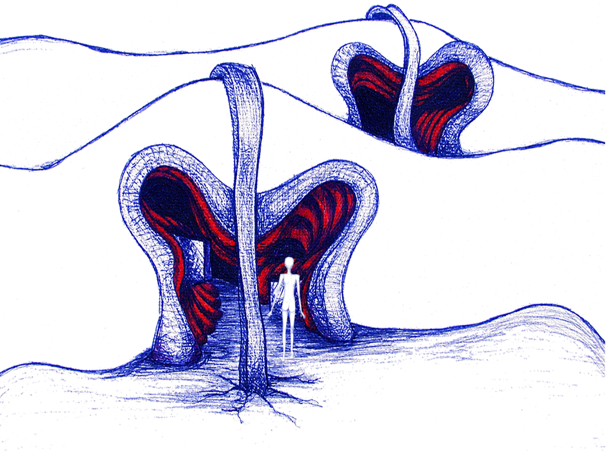
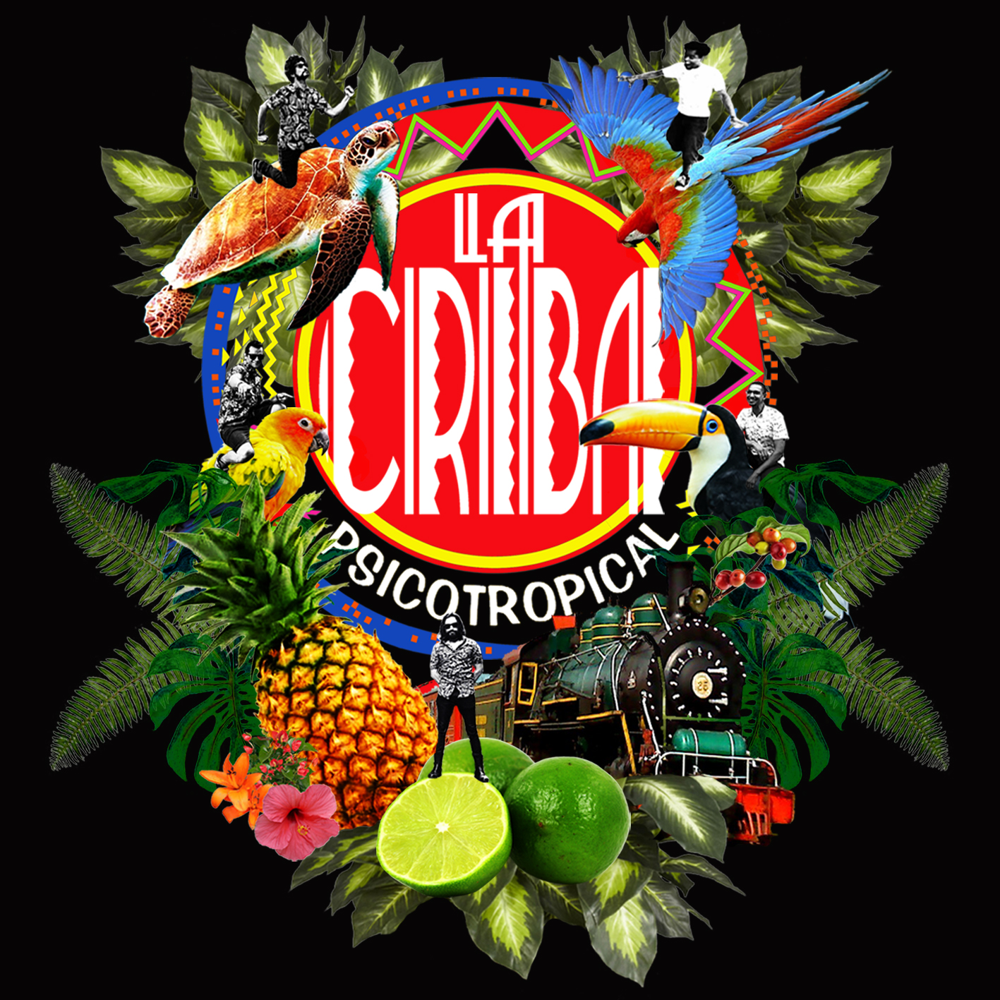
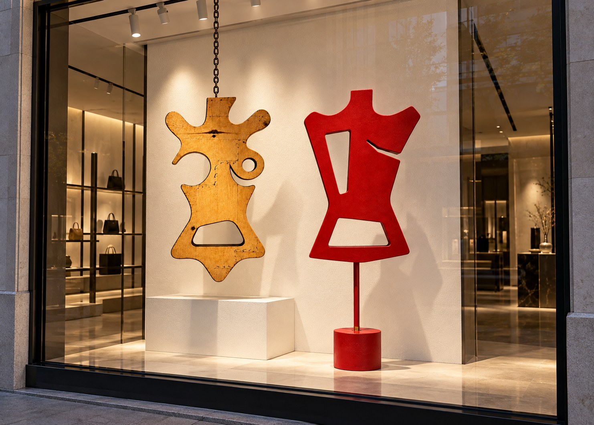
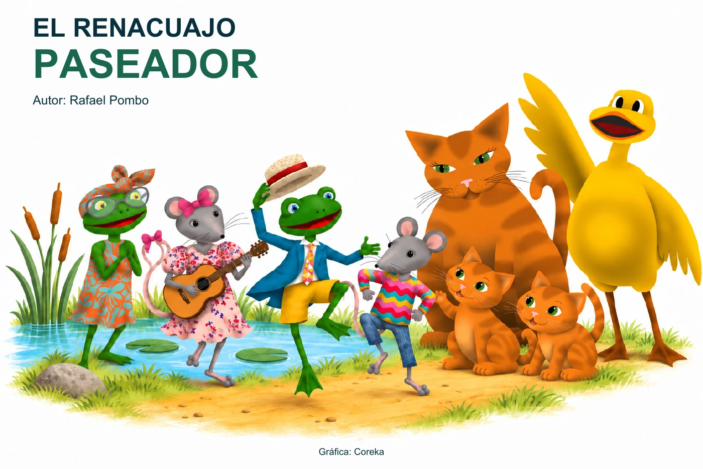
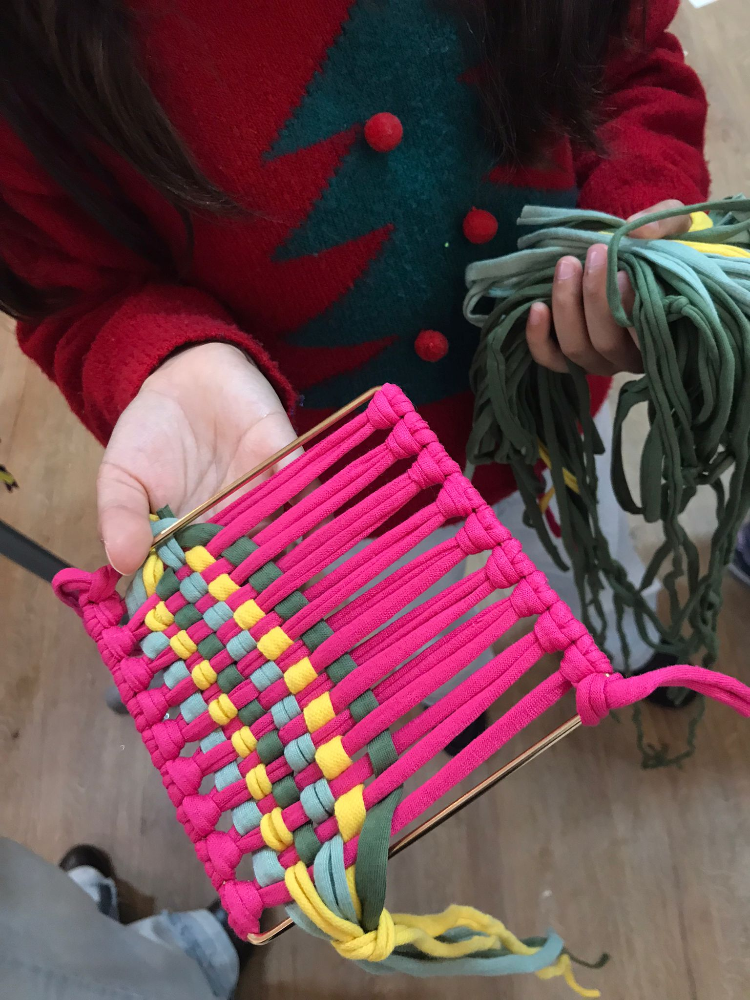
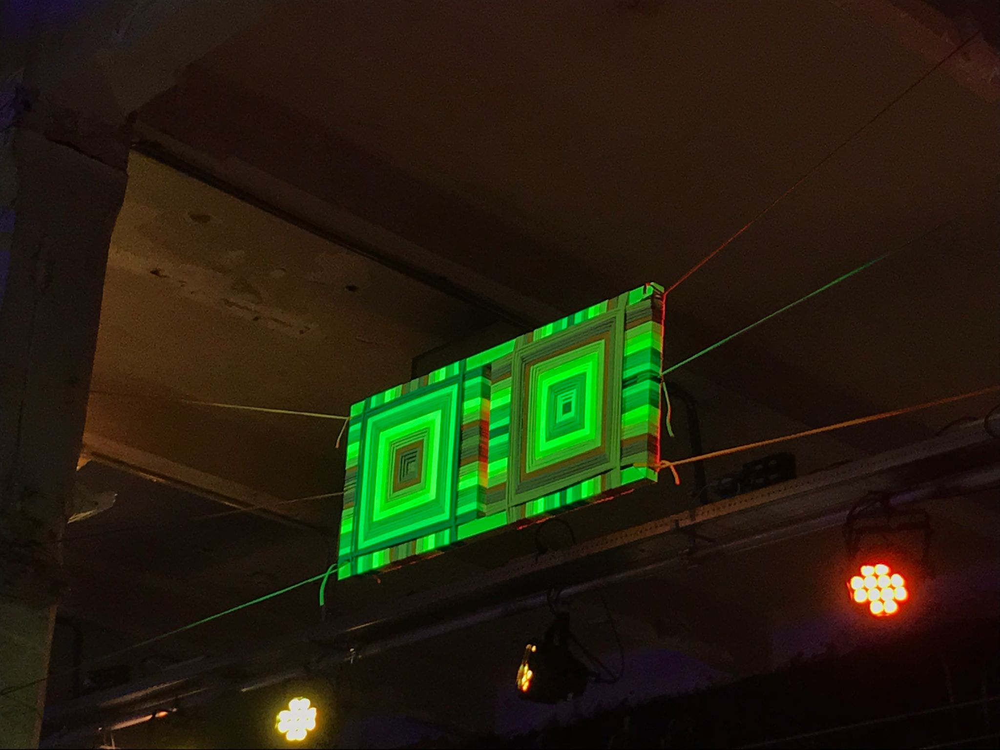
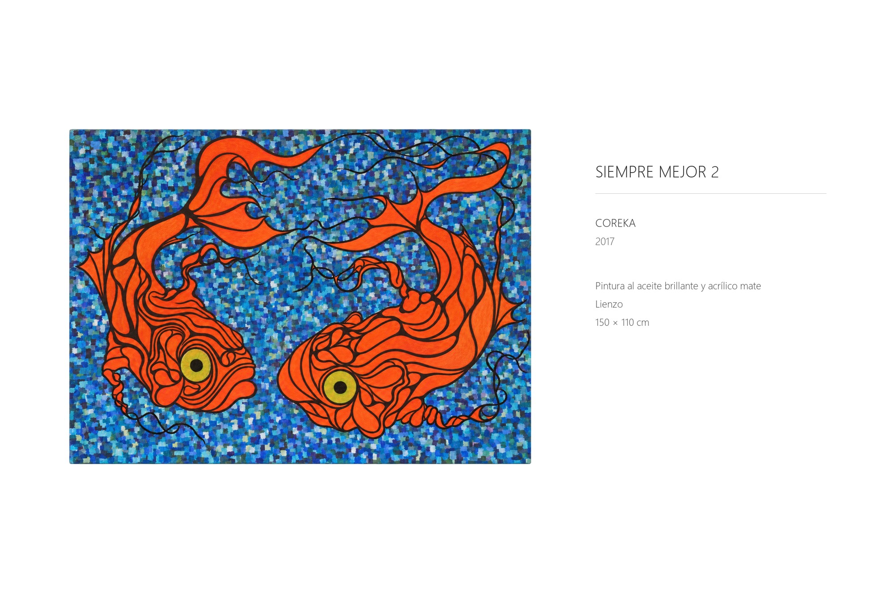
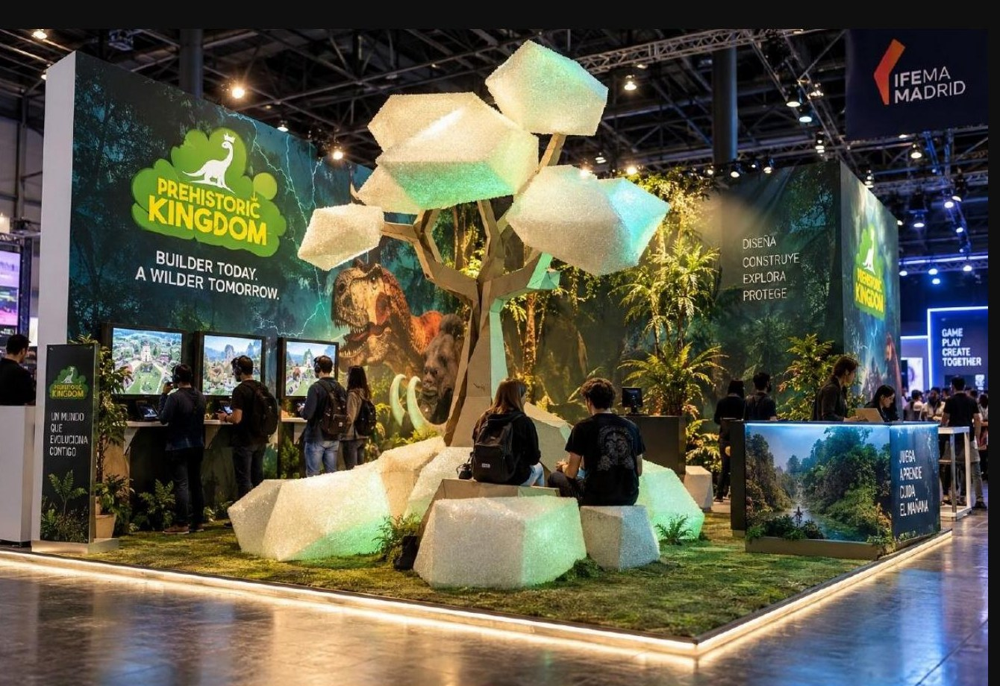

Diseño gráfico
e ilustración.

El hombre extractor
Ilustración · Narrativa visual · Dirección de arte

Ilustración de autor
Dibujo · Técnicas mixtas · Grabado

Alfabeto de Utopías
Ilustración editorial · Colección · Experimentación digital

La Trola
Identidad visual · Comunicación cultural · Aplicaciones de marca

La Criba
Diseño discográfico · Cartelería · Composición tipográfica

Galanes de Noche
Diseño de objeto · Bocetado · Materiales
Otros proyectos

El renacuajo paseador
Ilustración editorial · Cuento completo

Tejiendo Raíces
Taller · Cuento · Juego digital

Cuerpo Travesía · Matadero
Textil · Instalación · Participación

Pintura
Obra plástica · Selección pictórica

Prehistoric Kingdom
ARQUITECTURA EFÍMERA · PROYECTO NO CONSTRUIDO